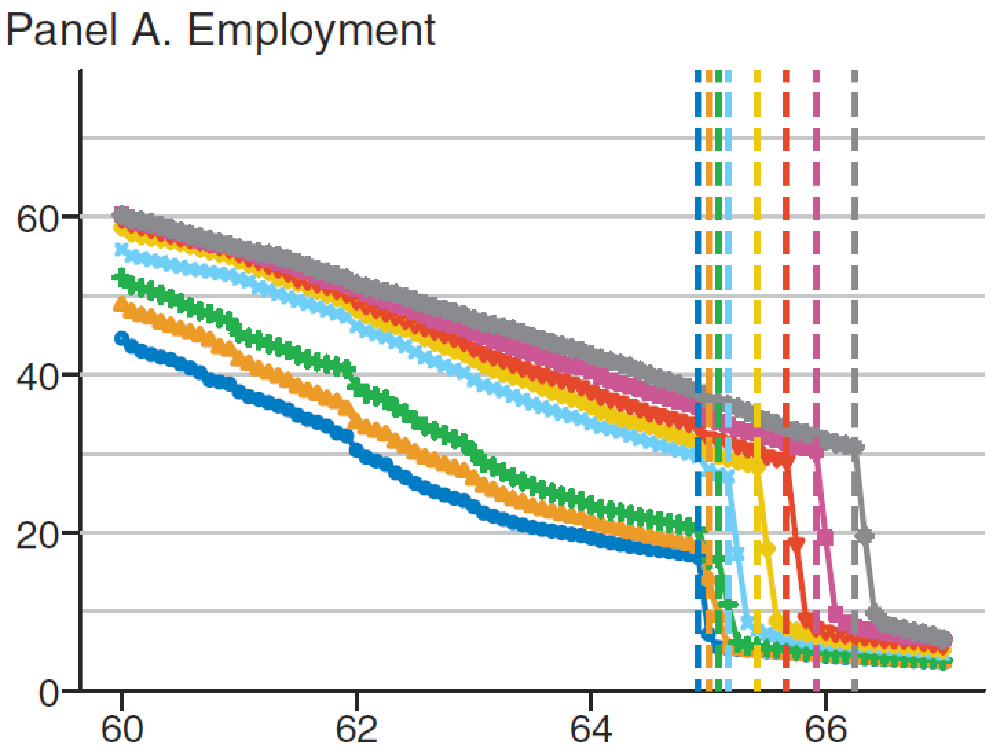

Public Economics
BSc Course
2025-02-19
6.1 Pensions and Retirement Systems
Demographics and Retirement Systems
- elderly population share and elderly dependency ratio increases rapidly
- demographic processes: can be forecast to some extent
- more important: ratio economically active/inactive population
- main problem:
social trends and economic incentives for late entry into and early exit out of labor market - requires changing parameters of the welfare state (standard retirement age, early retirement schemes, replacement rates, premium height, \(\ldots\))
- much more difficult to forecast: development of labor productivity
Three Pillars of the Retirement System
Pay-as-you-go social security
funded system of occupational pensions
savings and market products / private pensions and annuities
all three pillars make income receipt (ability to finance consumption) at old age possible without the necessity to work
from individual perspective: transformation of ‘resources today’ to ‘resources tomorrow’
differences as regards institutional organization
Pay-as-you-go System
- one group of individuals pays today, some other group receives today
- social security: employees \(\to\) pensioners
- works well if the ratio of payers/recipients stays balanced
- demographic, social and medical developments
- lower fertility rates, fewer (stable) marriages
- better health, longer life expectancy, lower mortality
- developments labor market and career patterns:
(changes in) early retirement, higher and later completion of formal education, more flexible work and fragmented careers, immigration
- SS: AOW
- benefit: flat, linked to minimum wage, depending on cohabitation status
- built-up: 2% per year, starting 50 years before SS eligibility age (67)
Capital Funded System
- one group ‘deposits money on an account’ today, the same group ‘receives from the same pot’ tomorrow
- note: same pot \(\neq\) individual account (sharing within the group)
- occupational pensions: mandatory saving
- works if the monies are being invested wisely
- however, large public pressure on pension funds to generate large returns
- consequence: take higher financial risks
- needs supervision
- occupational or professional or organizational pensions
- contributions shared between employers and employees
- benefits reflect career path
- top-up model, integrated with SS (“franchise”)
Defined Benefit (DB)/Defined Contribution (DC) Pensions
- defined-benefit plan: pension benefit is determined by formula and is in some sense ‘fixed’
- contributions vary, aiming to target a particular benefit level (replacement rate relative to career income)
- risk is with employers (and workers), less with pensioners
- there are often elements of redistribution and pooled premium determination
defined contribution plan: contributions are fixed, benefit levels vary
money is invested, market risk is with pensioners, less with workers (or employers)
in the limit, can be fully individualized (individual retirement accounts)
high portability between jobs
US: IRAs & 401(k) plans; individual carries investment risk; highly flexible
- DB: pension funds; pension funds carry investment risk;
- funding ratio (driven by interest rate) as main instrument guiding benefit indexation
- new Pension Act 2023:
- shift towards DC elements
- abolition of funding ratio
- more flexibility for pensioners, e.g. (limited) possibilities for taking out lump sum upon retirement
- more flexibility for workers that change jobs or become self-employed
- removes some of intergenerational tensions
Saving
- save money for your old day—personal responsibility
- ‘third pillar’, much neglected until recently
- requires a lot of individual discipline, forward-looking behavior, and judgement
- often not very attractive from an individual’s income tax point of view
- but: individual has control about own wealth
- uninsurable risk: longevity risk (time of death)
Comparison
- all three pillars are, under ideal circumstances, in some theoretical sense equivalent
- in practice: trade-off between demographic and financial risks
- social choice: retirement systems also redistribute
- pensions insure against longevity risk, saving does not
6.2 Life Cycle Model
Life Cycle Modeling, I
- aim: avoid large swings in consumption
- using access to financial markets (saving and borrowing), helps make consumption pattern independent of income pattern and thus independent of income fluctuations
- no pensions/retirement system necessary!
- but: uncertain length of life
- annuities as insurance against longevity risk (the risk to make wrong predictions about the length of life)
- pensions can be seen as a form of annuity
- allocate consumption over time \(t=0,1\): consume either today (\(c_0\), horizontal axis), or tomorrow (\(c_1\))
- indifference curve: consumer likes both \(c_0\) and \(c_1\), more of each is better
- budget constraint: endowment point determined by income today (\(y_0\)) and tomorrow (\(y_1\)), slope equals \(1+r\) (\(r\): common interest rate on both saving and borrowing)
- change in \(r\) has income and substitution effects on intertemporal consumption decision
- often, \(r\uparrow\) means consume less today but save and consume more tomorrow
2-period utility function: \[u(c_0,c_1) = \ln(c_0) + \ln(c_1)\]
2-period budget constraint: \[c_0 + c_1 = y_0 + y_1\] (\(y_t\): income, \(t=0,1\))
prices: 1, interest rate: 0
solution: \[c_0=c_1= \frac{1}{2}(y_0 + y_1)\] (complete smoothing)
2-period utility: \(u(c_0,c_1) = \ln(c_0) + \ln(c_1)\)
probability of dying between \(t=0\) and \(t=1\): \(\qquad\delta\)
expected utility \[\begin{aligned} Eu(c_0,c_1) &=& \underbrace{(1-\delta) [\ln(c_0)+\ln(c_1)]}_{\tiny \text{does not die}} + \underbrace{\delta [\ln(c_0)]}_{\tiny \text{dies}} \\ &=& \ln(c_0)+(1-\delta)\ln(c_1) \end{aligned}\]
if sure to survive (\(\delta=0\)), problem is unchanged; else possibility of death makes consumer discount the future
less inclined to save, consume more today (while you can)
this embryonic model can be extended to very flexible models with many more periods, featuring time preference, interest rates, and pension rules (retirement date, pension benefits, and so on)
2-period utility function: \(u(c_0,c_1) = \ln(c_0) + \beta \ln(c_1)\)
2-period budget constraint: \(c_0 + c_1/(1+r) = y_0 + y_1/(1+r)\) (\(y_t\): income, \(t=0,1\))
discount factor \(\beta\le 1\), interest factor: \(R\equiv 1+r\ge 1\)
combine MRS condition: \[\frac{c_1}{\beta c_0} = R\] with budget constraint: \[c_0 + R\beta c_0/R = (1+\beta) c_0 = y_0 + y_1/R\] to find: \(c_0 = (y_0 + y_1/R)/(1+\beta), \quad c_1 = R\beta c_0\)
if \(R\beta<1\) consumption smoothly decreases
if \(R\beta>1\) consumption smoothly increases
Life Cycle Modeling, II
3-period utility function: \(u(c_0,c_1,c_2) = \ln(c_0) + \beta \ln(c_1) + \beta^2 \ln(c_2)\)
3-period budget constraint: \(c_0 + c_1/(1+r) + c_2/(1+r)^2 = y_0 + y_1/(1+r) + y_2/(1+r)^2\)
alternative notation (same thing) \[u(c_0,\ldots,c_2) = \sum_{t=0}^2 \beta^t \ln(c_t) \qquad \text{and}\qquad \sum_{t=0}^2 \frac{c_t}{(1+r)^t} = \sum_{t=0}^2 \frac{y_t}{(1+r)^t}\]
straightforward extension to \(T+1\) periods \[u(c_0,\ldots,c_T) = \sum_{t=0}^{T} \beta^t \ln(c_t) \qquad \text{and}\qquad \sum_{t=0}^{T} \frac{c_t}{(1+r)^t} = \sum_{t=0}^{T} \frac{y_t}{(1+r)^t}\]
optimal consumption in \(t\) \[c_t = (\beta R)^t c_0, \qquad t=1,\ldots,T \qquad \mbox{where} \quad c_0 = \frac{\sum_{t=0}^T R^{-t} y_t}{\sum_{t=0}^T \beta^{t}}\]
- under \(r=0\) and \(\beta=1\), total life cycle consumption = total life cycle income implies: areas are equal
- for any income profile, consumption is smooth at retirement (and anywhere else, actually)
- open the desmos graph to see this
- under uncertainty of how long to live, can study different scenarios with associated probabilities and calculate expected values
- green line gives expected consumption under the indicated probability distribution
- open the desmos graph to see this
- interest rate very important for wealth accumulation and discounting
- for saving: a higher \(r\) implies substitution toward future consumption (saving more attractive)
- for liabilities: a higher \(r\) also implies a lower present discounted value (PDV) of future benefit claims \(b\)
- perpetuity (infinite horizon) of constant pension payout \(b\) \[PDV_{T\to +\infty} = \sum_{t=1}^{T} \frac{b}{(1+r)^t} = \frac{b}{r}\]
Mandatory Pensions
- \(L\) workers, \(B\) beneficiaries (retirees, pensioners)
- workers earn (constant) wage income \(w\), pensioners receive (constant) benefit \(b\)
- balanced budget of PAYG system \[\theta\cdot w \cdot L = b \cdot B\]
- \(\theta\) social security contribution (or tax)
- solve for \(b\): \[b = \theta\cdot w \cdot Z\]
- \(Z\) worker-to-retiree ratio (\(Z=\frac{L}{B}\))
- 2 period model, worker solves \[ \begin{align} \max_{c_0,c_1,s} &\ln(c_0) + \beta \ln(c_1) \nonumber \\ s.t. \quad &c_0+s=(1-\theta)w \label{BC1}\\ &c_1=R\cdot s+b \label{BC2} \end{align} \]
solution \[c_1 = (\beta R) c_0 \qquad \mbox{and} \qquad c_0=\frac{1}{1+\beta} \cdot \frac{\tilde{R}}{R} \cdot w\] where \(\tilde{R}\) is a mixed return on ‘investing’ a dollar in financial markets at \(R\) or in the pension system at \(Z\): \[\tilde{R} \equiv [(1-\theta)R+\theta Z] \]
- PAYG is a good deal if \(Z>R\) (i.e.) there are many workers per retiree and this is higher than the interest rate
- PAYG can be a bad deal \(Z<R\)
- but: PAYG is mandated with fixed \(\theta\) and \(b\)
- why is this done?
Adverse Selection
- longevity risk: either live longer than expected (save too little) or die earlier (save too much)
- pensions: annuity (compare: life insurance)
- pensions pool all participants and are based on averages
- mandatory insurance to avoid adverse selection (those knowing to die early will be less inclined to participate)
Behavioral Aspects
6.3 Behavioral Aspects and Policy
Behavioral Aspects
- there can be behavioral reaons for why gov’t forces people to save through a mandated retirement system
- uncertainties are paramount, the retirement planning task is too complex
- information is not (readily) available, calculation is technically challenging, the task is onerous and mentally overwhelming
- individuals are myopic (present-biasedness: discount the future too much)
- individuals are time-inconsistent (hyperbolic discounters)
- individuals cannot commit to a plan
consider 3-period utility fn: \(u(c_0,c_1,c_2) = \ln(c_0) + \ln(c_1) + \ln(c_2)\)
- exponential discounting: weight \(\beta\) for per-period utility \[u(c_0,c_1,c_2) = \beta^0 \ln(c_0) + \beta^1 \ln(c_1) + \beta^2 \ln(c_2) \] with \(\beta<1\), weights get smaller over time, \(\beta^0 > \beta^1 > \beta^2 > \ldots\)
- (quasi-)hyperbolic discounting: extra weight \(\kappa\) for future utility \[u(c_0,c_1,c_2) = \beta^0 \ln(c_0) + \kappa\left[\beta^1 \ln(c_1) + \beta^2 \ln(c_2)\right] \]
- hyperbolic discounting helps modeling time-inconsistent behavior (today make different plans for future consumption than what is optimal when viewed from tomorrow’s perspective)
- people willingly don’t save enough (according to their own goals)
graphs shows: from today’s perspective \(t=0\), how much is a dollar worth that you receive in \(t\) years?
green line: exponential discounting
yellow line: hyperbolic discounting
blue line: quasi-hyperbolic discounting
exponential is time consistent:
- today, the value of a dollar received in 5 years is \(\frac{1}{3}\)
- in 5 years, the value of a dollar received in 10 years (5 years from then) is \(\frac{1}{3}\)
(quasi)hyperbolic is inconsistent
Save More Tomorrow (SMarT) Program
Benartzi and Thaler, 2004, JPE
- SMarT: employer-based saving plan
- The plan provides two commitments:
- contributions to retirement savings are automatic
- the rate of contribution increases as the employee’s salary increases.
- Second, enrollment is voluntary, implying those who enroll demonstrate a demand for commitment.
- Third, the commitment is soft: employees can withdraw from the plan at any time without incurring a cost beyond filling out a form.
- Benartzi and Thaler’s results strongly support the joint hypothesis that people demand commitment and that soft commitments are effective
- 78% of those offered the program enrolled, indicating strong demand for the commitment
- after 4 pay raises, 80% of those individuals were still enrolled;
- increased savings rates (a 1.5% increase in savings rates)
Behavioral Policy
complex decisions relating far into the future tend to be postponed
laziness, procrastination, lack of self-control
calculations involving mortality probabilities, tax advantages, and associated expected values and variances are difficult
social norms matter a lot (to leave work as early as possible or to contribute to savings schemes)
changes of default (automatic enrolment), but also drastic changes (abolitions of financial incentives for employers to offer early retirement) can work, but good to have implementation done through employers
unclear: welfare effects (is early retirement/saving good, bad, or non-optimal?)
6.4 Pension Reform
Policy Issues and Pension Reforms in NL
- higher life expectancy requires a longer working life
- abolition of financial incentives to stop working at early ages (early retirement schemes)
- connect life expectancy and standard retirement age
- make possible and attractive to keep working (or start again) while drawing pension benefits (gradual and partial retirement, phased retirement, unretirement)
- however: issue of health toward the end of the working life cycle
- 2004 abolition of final pay pension determination
- 2006 abolition of early retirement (ER)
- 2013 link standard retirement age (SRA) to life expectancy
- 2023 new Pension Act (chageover until 2027)

data source: opendata.cbs.nl

source: Rabate et al, AEJ-EP 2024, Fig.3A

source: Bernasconi & Kantarci, 2023, Fig.2EF
partial: working part-time & claiming pension; Group 1: unaffected by ER stringency
6.5 Summary
Summary
- rationale for social security and public pension systems is either market failure (often: asymmetric information), distributional concern, or paternalism
- mandated participation tries to achieve:
- avoid premium-inflating adverse selection
- pensions: myopic and time-inconsistent consumers are forced to `save’
- as other annuities, pensions also help mitigating longevity risk
- behavioral theory argues that lack of self-control leads people to avoid looking into complex pension plan decisions
- changing defaults or subsidization increases pension saving, it may even increase total saving (no crowding out)

BSc Course • Public Economics • © 2024-25 Stefan Hochguertel
6 Social Security and Pensions